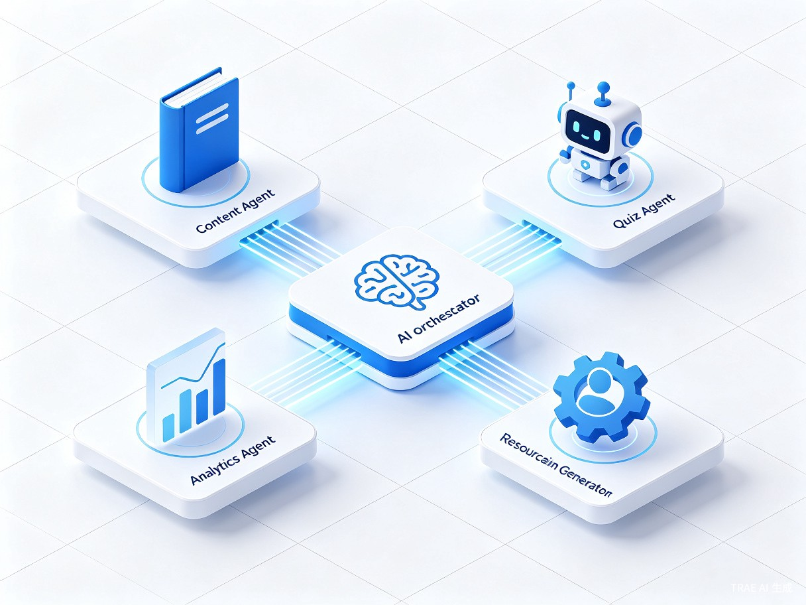
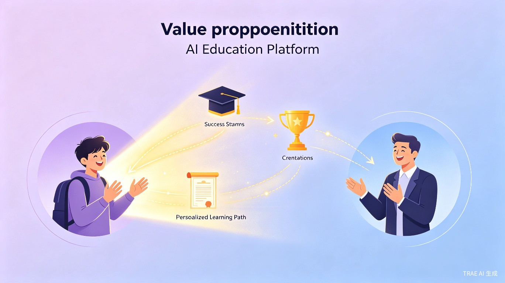

创意名称与介绍
创意名称：Kowell AI
Kowell AI 是一款基于多智能体协作架构的智能学习资源生成与个性化学习平台。系统由多个专业化 AI 智能体组成，包括内容生成智能体、学情分析智能体、测验评估智能体和路径规划智能体，它们协同工作，为每位学习者动态生成量身定制的学习材料、练习题、知识图谱和自适应学习路径。
想解决什么问题？
当前教育领域存在一个核心矛盾：优质教学资源供给严重不足。教师需要花费大量时间制作课件、出题、批改作业，而学生面对的往往是千篇一律的标准化教材，无法获得针对自身薄弱环节的精准辅导。这种"一刀切"的教学模式导致学习效率低下、学习动力不足，尤其对于基础薄弱或天赋突出的学生，缺乏个性化的学习支持更是严重制约了他们的成长。
为什么会想到做这个？
灵感来源于两个观察：其一，大语言模型和 AI Agent 技术的飞速发展，使得"AI 协作生成教学内容"从理论走向了现实；其二，在实际教学中，一位老师往往需要同时服务数十名学生，根本无法做到真正的因材施教。我们希望借助多智能体技术，让每位学生都拥有一个由多个 AI 专家组成的专属教学团队，7×24 小时陪伴学习，自动识别知识盲区、生成针对性练习、动态调整学习难度，从而实现大规模的个性化教育。
产品形态：一个面向学生和教师的 Web 端智能学习平台（支持 PC 和移动端浏览器访问），后续可扩展为桌面应用和小程序。核心功能包括 AI 资源生成、自适应学习路径、智能测验评估和学习数据分析仪表盘。
目标用户及痛点
在校学生（初高中/大学）
需要针对薄弱科目进行强化训练，希望获得个性化的学习指导和丰富的练习资源，但往往只能依赖统一的课堂进度和标准化教辅资料。
自学备考人群
包括考研、考证、考公等自主学习者，缺乏系统化的学习规划和高质量的自测工具，学习过程中遇到问题无人答疑，容易陷入低效重复。
一线教师
备课、出题、批改作业占据了大量时间，难以有余力关注每个学生的个体差异。需要工具帮助快速生成高质量教学素材和差异化练习。
教育机构 / 培训学校
希望降低教学内容的制作成本，同时提升教学效果和学员满意度，实现规模化、标准化的个性化教学服务。
使用场景
- 课前预习：学生输入即将学习的知识点，系统自动生成预习材料、概念讲解和基础练习，帮助学生带着问题走进课堂。
- 课后巩固：根据课堂表现和作业情况，智能体自动识别薄弱知识点，生成针对性的强化练习和错题解析。
- 考前冲刺：基于历史学习数据，生成个性化复习计划和模拟试卷，聚焦高频考点和个人薄弱环节。
- 教师备课：教师输入教学目标和学情数据，系统自动生成课件大纲、分层练习题和教学建议。
当前痛点总结
| 痛点维度 | 具体表现 | 影响 |
|---|---|---|
| 资源匮乏 | 优质教学资源集中在头部学校和机构，普通学生获取困难 | 教育不公平加剧 |
| 千篇一律 | 标准化教材无法适应不同学生的学习节奏和能力水平 | 学习效率低下 |
| 反馈滞后 | 学生做完练习后，往往需要等待数天才能获得批改反馈 | 错过的最佳纠正窗口 |
| 教师负担重 | 备课、出题、批改等重复性工作占据教师 60% 以上时间 | 无法关注个体差异 |
产品核心架构
Kowell AI 采用多智能体协作（Multi-Agent Collaboration）架构，由一个中央调度智能体协调多个专业化子智能体，形成完整的教学闭环。

学情诊断
学情分析智能体评估学生当前知识水平，识别薄弱环节
路径规划
路径规划智能体生成个性化学习路径，设定阶段性目标
资源生成
内容生成智能体动态创建讲解文档、练习题和知识卡片
测验评估
测验评估智能体出题、批改并生成详细的能力分析报告
动态调整
中央调度智能体根据评估结果实时优化学习路径和内容难度
价值与意义

效率提升
对学生而言，Kowell AI 通过精准定位知识盲区并生成针对性学习内容，避免了在已掌握知识上的无效重复，也避免了面对过难内容时的挫败感。自适应学习路径确保学生始终在最适宜的难度区间学习，研究显示这种"最近发展区"内的学习效率可提升 40% 以上。对教师而言，系统自动化的资源生成和作业批改功能，可将教师从重复性劳动中解放出来，将更多精力投入到对学生的个性化指导和情感关怀上。
社会价值
教育公平是社会发展的基石。Kowell AI 有望成为缩小教育资源差距的有力工具——无论学生身处一线城市还是偏远地区，只要能够接入互联网，就能获得由顶级 AI 教学团队提供的个性化学习体验。这在一定程度上打破了优质教育资源的地域壁垒和经济壁垒，让"因材施教"这一千年教育理想真正落地为普惠性的技术服务。同时，系统持续积累的学情数据和学习行为分析，也为教育研究者提供了宝贵的实证数据，有助于推动教育科学的进步。
商业价值
全球在线教育市场规模已超过 3000 亿美元，且年增长率保持在 10% 以上。AI + 教育是当前最具潜力的垂直赛道之一。Kowell AI 的多智能体架构形成了显著的技术壁垒，其"资源生成 + 个性化路径 + 智能评估"的闭环产品形态具备强大的用户粘性和可扩展性。商业模式上，可采取 B2C 订阅制（面向学生个人）和 B2B 授权制（面向学校和机构）双轮驱动，具有清晰的盈利路径和规模化潜力。
总结与展望
Kowell AI 不仅仅是一个学习工具，更是一种全新的教育范式。它将多智能体 AI 技术与教育深度融合，构建了一个自动感知、自动生成、自动评估、自动优化的完整学习闭环。在短期内，我们聚焦于 K-12 和高等教育场景，打磨核心的智能体协作能力和内容生成质量；在中期，将拓展至职业教育和企业培训领域；在远期，我们希望构建一个开放的多智能体教育生态，让第三方开发者可以创建和接入专业化的教学智能体，共同推动个性化教育的发展。
愿景：让每一位学习者都能拥有自己的 AI 教学团队，让优质教育触手可及。